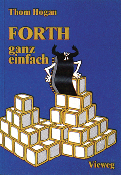
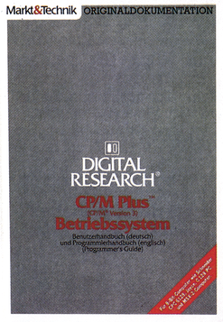
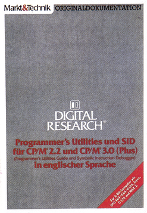

Literatur für Einsteiger
Forth — ganz einfach

Forth, die Computersprache der vierten Generation — sagen die einen; Forth, eine Sprache unter vielen — meinen andere. Was hat es nun mit dieser, im Vergleich zu anderen doch ziemlich jungen Programmiersprache auf sich? Besonderheiten, wie die Stapelverarbeitung nach dem »Lifo« (Last in, first out)-Prinzip sind ja noch relativ bekannt bei Forth-Laien. Wer aber wirklich in die Programmierung in Forth einsteigen will, wird sich schnell nach geeigneter Anfängerliteratur umsehen.
Im Vieweg Verlag ist dazu im vergangenen Jahr ein Buch mit dem Titel »FORTH — ganz einfach« erschienen. Es ist die deutsche Übersetzung des im Jahre 1982 von Thom Hogan verfaßten Werks »Discover FORTH«, und wurde gerade für Neulinge in diesem Gebiet geschrieben. Mit einer locker geschriebenen und reich bebilderten Darstellungsweise soll dem Leser das Verständnis von Forth erleichtert werden.
Mit zirka 80 Seiten ist dieses Werk nicht gerade als dick zu bezeichnen, man sollte jedoch den Informationsgehalt dieser Seiten nicht unterschätzen. Das Buch ist in zwölf Kapitel und drei Anhänge gegliedert, die ausnahmslos geballte Informationen liefern und übersichtlich gestaltet sind. Der Leser wird nicht gleich mit einer Befehlsliste irritiert, sondern er lernt nach und nach alle wichtigen Befehlswörter kennen. Positiv aufgefallen ist, daß am Schluß jedes Kapitels noch einmal das Wichtigste in Stichpunkten zusammengefaßt wurde. Natürlich ist man nach der Lektüre dieses Buches kein Meister in Forth, aber man ist danach mit der Sprache vertraut und kann erste Programmierversuche unternehmen. Es ist wirklich bemerkenswert, daß der Autor es geschafft hat, mit so wenigen Worten dem Leser so viel Wissen über Forth zu vermitteln. Zuerst wird dabei kurz die Frage nach dem Wesen von Forth beantwortet. Im Anschluß geht der Autor auf die Unterschiede zu anderen Programmiersprachen, wie Basic, Fortran oder Pascal ein. Hier werden auch die formalen Grundzüge der Sprache behandelt. Speziell mit dem Forth-Stapel und den damit verbundenen Eigenheiten beschäftigt sich das folgende Kapitel. Man erfährt dort einiges über die Art der Verarbeitung von Daten im »Stack« und lernt erste Befehle kennen, die mit dem Stapel operieren. Das vierte Kapitel handelt vom Rechnen mit Forth. Die sogenannte »postfix-Notation« oder auch »umgekehrte polnische Notation« wird hier beschrieben und anhand von Beispielen verständlich gemacht. An dieser Stelle geht Thom Hogan von der Theorie zur Praxis über. Erste Gehversuche in Forth werden unternommen, bei denen das bis jetzt Gelernte angewandt wird. Außerdem lernt man neue Befehlswörter kennen. Auch die interessante Materie der Definition neuer Befehle, die auf die bereits im Wortschatz vorhandenen aufbauen, wird berücksichtigt. Die nächsten Kapitel widmen sich den Möglichkeiten der Speichermanipulation in Forth und den dazu benötigten Befehlen, sowie den logischen Verknüpfungen. Kontrollstrukturen, wie indizierte Schleifen und bedingte Sprünge werden ebenfalls recht genau beschrieben. Abschließend wird dem Leser noch Grundlegendes zur Programmierung in Forth mit auf den Weg gegeben, angefangen vom Speicherformat der einzelnen Blöcke bis hin zu der Art und Weise, wie ein Forth-Programm im günstigsten Fall aufgebaut ist. Im Anhang findet man eine Befehlsübersicht nebst Beschreibungen, sowie eine Liste der ASCII-Codes und der Forth-Fehlermeldungen.
Das Buch bietet für einen Preis von 29,80 Mark wichtige Informationen für den Einsteiger in Forth und ist, abgesehen von dem zwar nicht trockenen, aber auch nicht sonderlich unterhaltsamen Schreibstil, durchaus empfehlenswert.
(M. Marek/bj)Thom Hogan, Forth — ganz einfach, Vieweg-Verlag, ISBN: 3-528-04292-3, 77 Seiten, Preis: 29,80 Mark
CP/M-Literatur aus erster Hand: Originaldokumentationen von Digital Research
Da sich das einst totgeglaubte Betriebssystem CP/M von Digital Research im Aufwind befindet (dank neuer 8-Bit-Computer wie C 128, Schneider CPCs und Joyce), wurde dies zum Anlaß genommen, den vielen neuen CP/M-Anwendern qualitativ hochwertige Informationen in Form der Originaldokumentation von Digital Research zu bieten.
Diese Originaldokumentation konnte teilweise bei Digital Research angefordert werden (zum Beispiel mit der dem C 128 beiliegenden Bestellkarte für die restlichen Utilities, die im Lieferumfang des C 128 nicht enthalten sind). In der Neuauflage liegen folgende Werke vor:
CP/M Plus Benutzerhandbuch und Programmierhandbuch

Dies ist eine Zusammenfassung der ehemaligen »User's Guide« und »Programmer's Guide«, wobei ersteres ins Deutsche übersetzt wurde. Es handelt sich um eine fehlerfreie 1:1-Übersetzung. Der zweite Bestandteil dieses Buches ist ein reiner Nachdruck der englischen Version. Beide zusammen ergeben einen dicken »Wälzer«, der alles über die Anwendung der CP/M-Befehle, Dateitypen, Aufbau von CP/M 3.0, Programmierung unter CP/M, BDOS-Systemaufrufe und Diskettenorganisation vermittelt. Für etwa 500 Seiten ist der Preis von 38 Mark als sensationell zu bezeichnen. Schon der deutschsprachige Teil, der jeden CP/M-Anwender (vom Anfänger bis zum Profi) betrifft, rechtfertigt diesen Preis. Der englische Teil (Programmierhandbuch) ist zwar für den CP/M-Programmierer von größerer Bedeutung, aber leider nicht übersetzt worden. Mit gutem Schulenglisch und im Bedarfsfall unter Verwendung eines Wörterbuches ist dieser jedoch auch lesbar. Die kapitelweise Numerierung erleichtert das Zurechtfinden in diesem voluminösen Buch erheblich. Die Beispielprogramme und überaus zahlreichen Tabellen sind ebenso wie der Text vor allem durch ihre logische Struktur wertvoll, die dieses Buch als Nachschlagewerk unentbehrlich macht.
Programmer's Utilities und SID für CP/M 2.2 und CP/M 3.0

Ebenso verhält es sich mit — Programmer's Utilities und SID für CP/M 2.2 und 3.0
Dieses Werk bespricht die wichtigen Programmierhilfen wie den SID (Symbolic Instruction Debugger, eine Art Monitor) sowie die verschiedenen Assembler (MAC, RMAC), XREF (Cross-Referenz-Programm) und LINK-80 (Linker), also Software, ohne die kein CP/M-Maschinenprogrammierer auskommt. Allerdings wird die Kenntnis der Z80-Maschinensprache stillschweigend vorausgesetzt, weil dazu schon eine Reihe interessanter Bücher erschienen sind. Deshalb ist dieses Buch nur für CP/M-erfahrene als Standardwerk zu empfehlen, die obendrein über Englischkenntnisse verfügen müssen, denn dieses Buch wurde nicht, auch nicht teilweise, ins Deutsche übersetzt. Es handelt sich um einen unveränderten Nachdruck des Programmer's Utilities Guide; dieser war bislang nur mit großem Aufwand zu beschaffen, weshalb der Preis von 49 Mark zwar nicht ganz so günstig wie beim zuerst vorgestellten Werk ist, aber dennoch ein gutes Preis-/Leistungsverhältnis garantiert. Vor allem bei diesem systemnahen Thema kommt es dem Buch zugute, daß die Entwickler selbst als Verfasser verantwortlich zeichnen.
Für beide Bücher gilt, daß ein CP/M-Anwender diese bewährte Literatur unbedingt haben sollte. Da die vorgestellten Informationen für alle CP/M-Geräte Gültigkeit haben, ist der Nutzen für C 128-Anwender nicht ganz so groß wie bei einem Buch, das speziell auf den C 128 eingeht, aber dennoch überdurchschnittlich hoch. Der größte Vorbehalt für C 128-Anwender besteht jedoch in der Tatsache, daß die Programme, die in »Programmer's Utilities und SID für CP/M 2.2 und CP/M 3.0 (Plus)« vorausgesetzt werden, nicht im Lieferumfang des C 128 enthalten sind. Es handelt sich hierbei um Utilities, also Hilfs- und Dienstprogramme, die zur Entwicklung und Korrektur von Assemblerprogrammen für den Prozessor 8080 eingesetzt werden. Die Lieferung der Programme mit der dem C 128 beiliegenden Bestellkarte über die Firma DIS Versand Service GmbH führt jedoch dazu, ein gewaltiges Handbuch von Digital Research zu erhalten, in dem das Programmier- und Benutzerhandbuch schon enthalten sind (allerdings in englischer Sprache). Wer also die restlichen Utilities schon bestellt hat, kommt ohne das zuerst erwähnte Buch (Benutzer- und Programmierhandbuch) aus, erhält mit dem zweiten jedoch weitere Informationen zu den Utilities. Allen denen, die sich nicht mit dem Gedanken tragen, in die Maschinenprogrammierung unter CP/M einzusteigen, aber Informationen zum CP/M-System benötigen, sind mit dem ersten Werk gut beraten. Ansonsten ist jedoch Vorsicht geboten, um nicht zweimal die gleiche (auch übersetzte) Literatur zu erhalten.
(Florian Müller/bj)Digital Research, CP/M Plus Betriebssystem: Benutzerhandbuch und Programmierhandbuch, Markt & Technik Verlag AG, ISBN: 3-89090-371-1, zirka 500 Seiten, Preis: 38 Mark
Digital Research, Programmer's Utilities und SID für CP/M 2.2 und CP/M 3.0(in englischer Sprache), Markt & Technik Verlag AG, ISBN: 3-89090-372-X, zirka 370 Seiten, Preis: 49 Mark